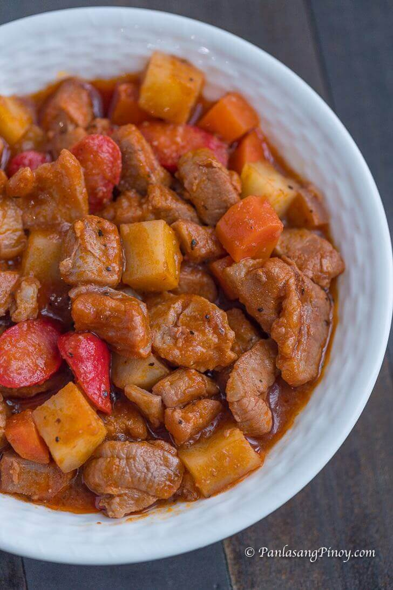

|  |
| Ingredients | 1 tsb cooking oil 4 piece of Potato sliced 1 kg of Pork 2 cloves of Garlic 2 piece of green bell peppers 4 piece of hotdog sliced 2 piece of Bayleaf 1 cup of tomato sauce 1 cup of water 1 tsb of ground peppers 1 tsb brown sugars |
|---|
| Guide How To Cook Menudo |
| put the potatoes and carrots saute it in the oil then remove it from the pan, put the pork and sauté it ypu can add magic sarap on it, then add the potato and Carrot and simmer it for 10 minutes after this youre done cooking, You Can serve it now |